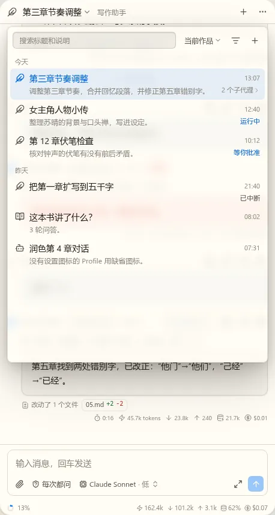
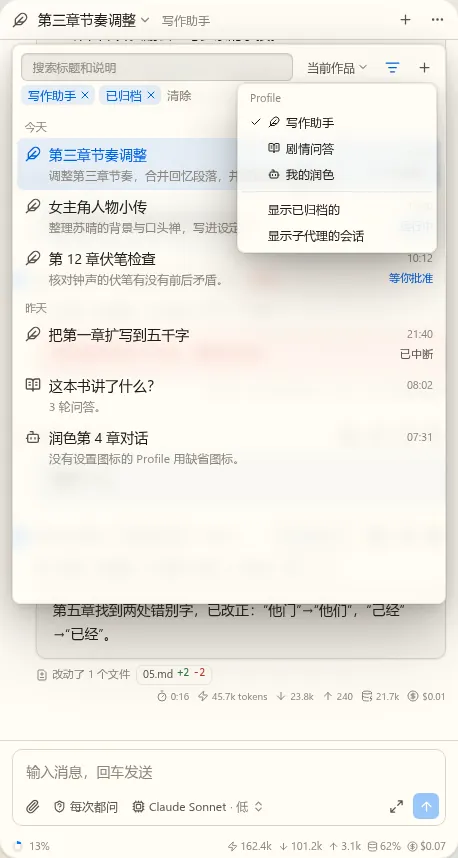
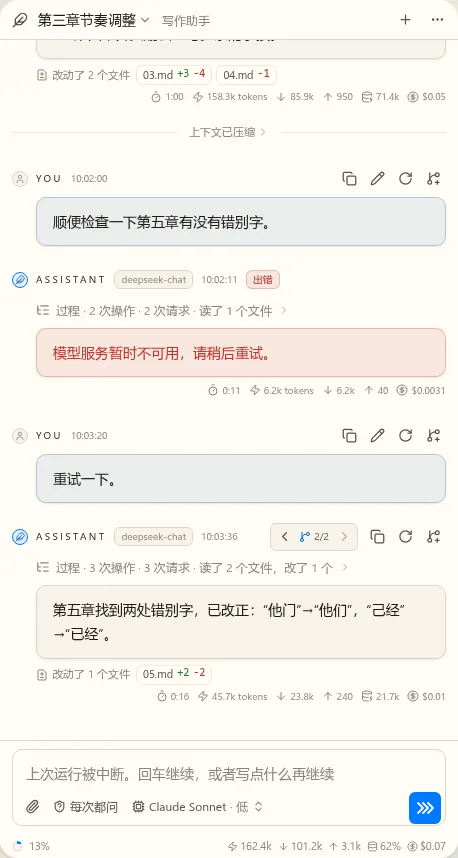

t17 对话界面第一版：静态稿（第 5 轮）
已定：会话列表要 A 和 C，用同一个组件。这轮看你提的改动。
待定1. 会话面板
- 图标：每行前面是 Profile 的图标。
agent.profiles的声明加icon?，没写用缺省图标（图里“我的润色”）。Profile 名字放在图标的悬停提示里，列表里不重复写。 - 过滤器：不再是一排小块。平时只有搜索、作品范围、一个过滤按钮；过滤按钮打开菜单选 Profile、显示已归档、显示子代理。选了的条件才显示成可去掉的标签（第二张图），按钮变色。
- 子代理：默认不显示。父会话那行写“2 个子代理”，点开在下面展开（t14 才有，第一版不显示这一项）。过滤菜单里也能打开“显示子代理的会话”。
- 圆角：标签是 6（原来 4，大了 2）。




待定2. 继续按钮
图标换成 >>>。上一轮的重影是我的静态稿造成的：我把假按钮盖在真发送按钮上，下面的箭头露出来了，实现里不会有。图标库里没有三个箭头的现成图标，这里是自己画的 SVG；如果两个也行，可以直接用 chevrons-right。按钮尺寸实现时和发送按钮一样。

